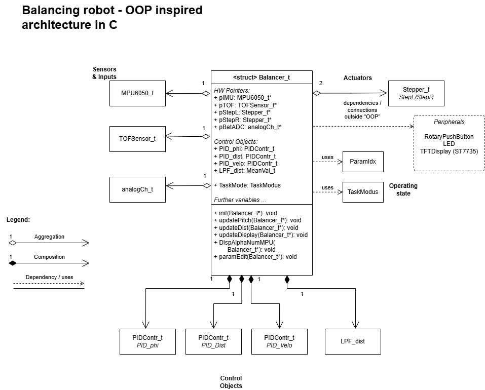
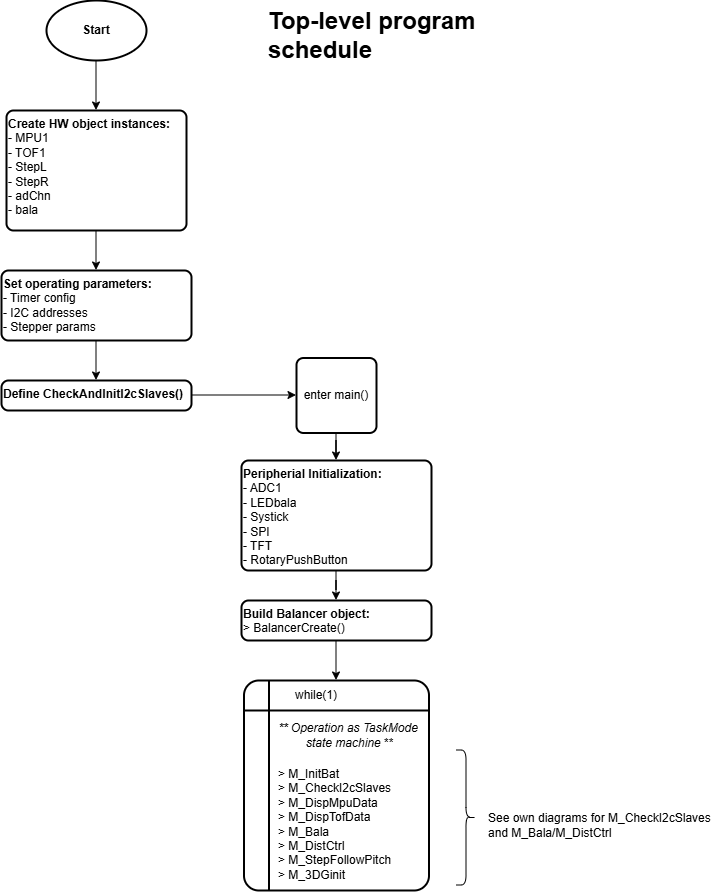
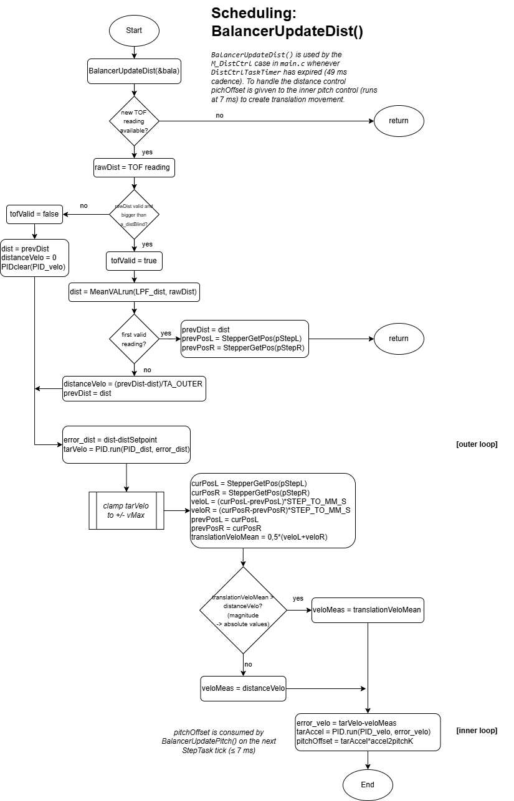
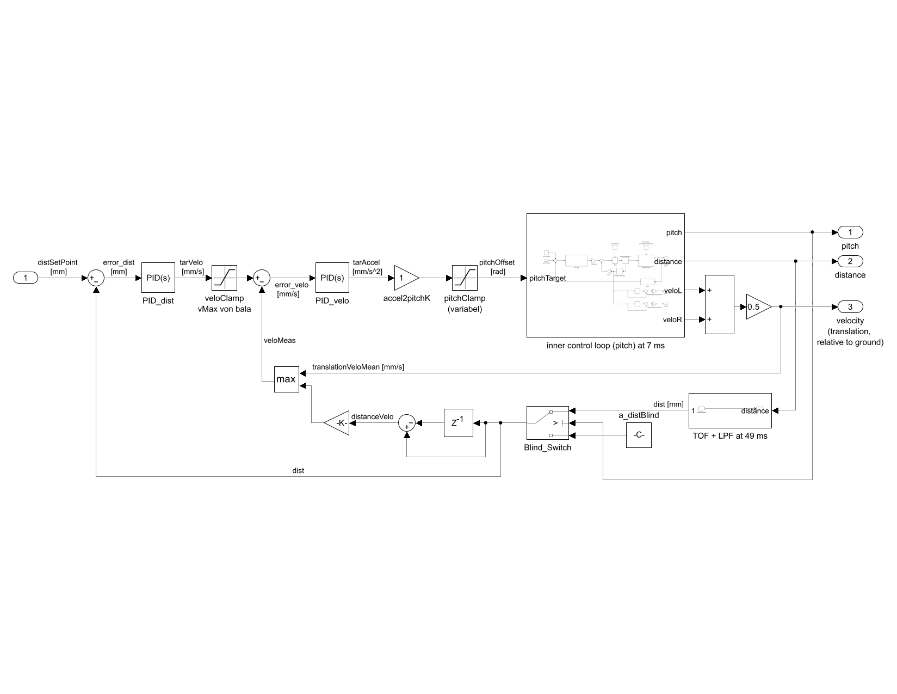
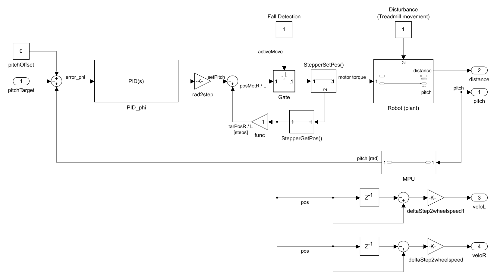

- Generated on for BALO by
 1.16.1
1.16.1
|
BALO
|
Studienarbeit T3200 – Erweiterung des Balancer Roboters durch eine Abstandsregelung DHBW Stuttgart, Studiengang Mechatronik (TMT23GR1), 6. Semester.
This software is licensed based on CC BY-NC-SA 4.0.
The Balancer is a self-balancing two-wheel robot built on an STM32F4 microcontroller. Before this project, the codebase already provided a working pitch (tilt) controller – the robot could hold the upright position and follow manually defined turn routines – together with a set of OOP-style C drivers (MPU6050_t, TOFSensor_t, Stepper_t, PIDContr_t, MeanVal_t, analogCh_t).
This contribution to the project is split into two coupled parts:
Function- and field-level documentation is placed directly as Doxygen comments in the source files. This page introduces the two parts and the diagrams that explain the architecture.
The pre-existing main.c mixed multiple concerns in one file: hardware instantiation, peripheral init, mode/state machine, control law, and parameter editing. Adding distance control on top of that flat structure would have made the code even more overloaded. The refactoring introduces one object that holds all subsystems, exposes a small set of public method-pointers, and keeps main.c focused on scheduling.
Quantum Leaps' guide can be a good starting point to understanding and applying the use of object oriented programming in C. In the following it will be exlpained to what extend and how those conceps have been incorporated into the balancer refactoring.
The pattern follows the convention already used by PIDContr_t in regler.h and the hardware drivers: a struct stores both data fields and function pointers as members. The pointer assignments are made once, at file scope, in a single const prototype instance:
The pointers are seeded from a single const prototype, copied wholesale into each instance by the constructor:
Calls then use the instance's own copy of the pointer – bala.updatePitch(&bala) in main.c.
The actual method implementations are static (file-private), so the only public entry points are the function pointers carried by the struct itself.
Balancer_t (defined in balancer_t.h) groups its fields by responsibility, exactly as visualised in the class diagram:
BalancerCreate(b, imu, tof, stepL, stepR, bat) is the constructor in balancer_t.c. It (1) copies the const Balancer_t Balancer prototype into *b to seed the six method function pointers, (2) wires the five HW pointers (pIMU, pTOF, pStepL, pStepR, pBatADC) to the static hardware instances declared in main.c – dependency injection, lifetime stays with the caller – and (3) calls Balancer.init(b), which loads defaultParam[] into ParamValue[], initialises the three PIDs and the TOF low-pass filter LPF_dist with their parameter values and sample times (TA_INNER / TA_OUTER), and resets every operating-state field. After the call, the object is ready for use:
The main loop is reduced to four parts: a SysTick tick handler, the parameter editor bala.paramEdit(&bala), a StepTask switch over bala.TaskMode, and a 700 ms DispTask. The mode-FSM transitions (M_InitBat → M_CheckI2cSlaves → M_Bala / M_DispMpuData / M_DispTofData / M_DistCtrl) are visualised in the program schedule diagram.
When entering M_DistCtrl the robot must hold a target distance to an obstacle in front of it (typical demo: stationary on a treadmill, the belt moving the obstacle relative to the robot). Pitch control must keep working unchanged – distance control sits on top of it.
A direct distance-to-pitch PID could fight the inner balance loop an is more intransparent in terms of debugging and finding the control parameters. The robust solution is the classical cascade with three nested loops, each running at the rate that fits its dynamics:
| Loop | Input | Output | Rate | Object |
|---|---|---|---|---|
| Outer (distance) | filtered TOF distance vs. setpoint | target velocity tarVelo [mm/s] | 49 ms | PID_dist |
| Middle (velocity) | tarVelo vs. measured velocity | target acceleration → pitchOffset [rad] | 49 ms | PID_velo, factor a_a2p |
| Inner (pitch) | pitch IMU vs. pitchOffset | stepper step command (alternating left and right side) | 7 ms | PID_phi (existing) |
The output of the cascade is b->pitchOffset. Inside the existing BalancerUpdatePitch(), it is added to the pitch reference and clamped by a_pClamp so that the outer loops can never destabilise the inner one:
This is the single integration point between the two halves of the project: pitchOffset is written by updateDist() and read by updatePitch(). Everything else stays decoupled.
The whole control architecture is displayed in control diagrams for both inner and outer loops as well as a detalied viausisation of the updateDist()-routine.
BalancerUpdateDist() (in balancer_t.c) executes the outer two loops. Two practical details are worth highlighting:
The ParamIdx enum and defaultParam[] are extended with the cascade tunables – every value is editable live via the rotary encoder + push button (BalancerParamEdit()):
a_dKP, a_dKI, a_dKD, a_dSP (setpoint mm), a_dLPF (TOF MeanVal weight), a_distBlind, a_vKP, a_vKI, a_vKD, a_vMax, a_a2p (acceleration→pitch gain), a_pClamp.
The new mode M_DistCtrl runs the inner pitch loop on every StepTask tick (7 ms) and the outer/middle loops only when DistCtrlTaskTimer expires (49 ms):
M_Bala is unchanged – it simply does not call updateDist(), so pitchOffset stays zero and the inner loop behaves exactly as before. This makes M_Bala the safe fallback during distance-loop tuning.
| Parameter | Value | Description |
|---|---|---|
| a_dKP | 8.0 | Distance loop proportional gain |
| a_dKI | 0.002 | Distance loop integral gain |
| a_dKD | 0.05 | Distance loop derivative gain |
| a_dSP | 150 mm | Distance setpoint |
| a_dLPF | 0.2 | TOF low-pass filter weight |
| a_dBli | 10 mm | TOF blind-zone fallback distance |
| a_vKP | 0.5 | Velocity loop proportional gain |
| a_vKI | 0 | Velocity loop integral gain |
| a_vKD | 0 | Velocity loop derivative gain |
| a_vMax | 1000 mm/s | Maximum commanded velocity |
| a_a2p | 0.0003 | Acceleration-to-pitch conversion gain |
| a_pClp | 0.15 rad | Pitch clamp limit |
The balancer holds distance to a static wall and tracks a moving target (e.g. a hand). The cascaded control structure is fully functional.
The cascade was tuned inside-out: each stage was made stable before the next outer stage was enabled. Gains were changed one at a time, the physical response was observed, and adjustments were made based on a small set of recognisable failure modes.
The physical limits of the stepper actuator were characterised before any cascade tuning. Because the wheels are position-controlled, the textbook coupling between commanded chassis lean and resulting translation does not hold cleanly: lean angles below approximately 0.05 rad produce no visible translation, while lean angles above approximately 0.125 to 0.15 rad cause the chassis to fall forward. The working range for the cascade output is therefore narrow. a_pClp was set to 0.15 rad so the cascade has access to the upper edge of the working band while the inner-loop fall detection at 0.35 rad remains as a final safety net.
The cascade output at zero measured velocity is pitchOffset = dKP × vKP × a2p × error_dist. This product was tuned so that the cascade reaches the upper end of the working envelope at a typical distance error of 100 mm. Several gain combinations satisfy the required product, but the ratio between dKP and vKP matters. Initial attempts with dKP = 2, vKP = 2 and dKP = 4, vKP = 1 produced violent oscillation between the positive and negative pitchClamp. The cause was excessive authority of the velocity feedback path: the inner balance loop's wheel corrections produce velocity swings of several hundred mm/s, which at high vKP are sufficient to drive pitchOffset between its clamps each cycle.
The fix was to shift gain from vKP to dKP while preserving the product. The configuration dKP = 8, vKP = 0.5 reduced velocity-loop authority by a factor of four and eliminated the oscillation while keeping the static cascade strength unchanged.
With proportional behaviour working, the robot accelerated toward the setpoint and tended to overshoot. The distance derivative term a_dKD = 0.05 was introduced to provide anticipatory braking as the distance shrinks. This produced clean approach behaviour with minimal overshoot. The velocity derivative a_vKD was tried but proved unnecessary at the current velocity-loop gain.
With proportional and derivative active, the robot reliably approached the setpoint but settled with a steady-state offset. This is the expected behaviour of a purely proportional cascade: at the setpoint pitchOffset = 0, but a small lean is physically required to overcome stepper detent torque and rolling friction. A small distance integral gain a_dKI = 0.002 accumulates this offset and corrects the residual error. Larger values caused integral windup during the long approach phase and were rejected. The velocity integral a_vKI was deliberately kept at zero.
The tuned cascade was validated in three scenarios:
Two hardware-level effects significantly influenced the tuning and should be characterised before any future tuning effort.
Variation between balancer units. During development two different balancer assemblies were used, with noticeably different behaviour. The pitch angle at which translation begins and the angle at which the chassis falls forward vary substantially between units. The 0.15 rad value used here is close to the fall threshold of the weaker-stepper unit but was insufficient to produce visible translation on the stronger-stepper unit. Future tuning should first measure these two thresholds (translation onset and fall limit) experimentally for the specific hardware in use, then size a_pClp and the static cascade gain to fit within the resulting working envelope.
TOF sensor mounting angle. On the units used here, the TOF sensor is mounted at a slight downward angle. When the robot leans forward to translate, the sensor's beam can intercept the floor rather than the intended target. The measured distance then drops rapidly as a side effect of the lean itself, not as a consequence of actual translation. This couples the inner pitch loop directly into the distance measurement and creates a false-feedback path that the controller cannot distinguish from real motion. The selection of the velocity value that has a larger magnitude between the translation velocity obtaianed from the weel positions and the one from the TOF distance reading and the usage of the blind distance are approaches to cancel those negative effects. For future balancer revisions and especially for treadmill operation, it could be a possibility to mount the TOF sensor so that its optical axis is horizontal when the chassis is upright.
This section groups the diagrams by purpose. The first diagram explains the OOP-style aggregate structure introduced by the refactoring. The next two diagrams describe the top-level program execution and the internal sequence of the new distance-control routine. The last two diagrams show the control architecture itself: the cascaded outer loops and the existing inner pitch loop.
Together, these figures provide a compact visual explanation of how the structural refactoring and the new control feature fit together.
Class diagram – Balancer_t aggregate structure This diagram shows the Balancer_t aggregate introduced by the refactoring. It visualises which subsystems are aggregated by pointer from main.c and which control objects are owned directly by value inside the aggregate.
The diagram puts the new additions (distance-control fields and methods) into context with the existing infrastructure. It is meant to clarify the main architectural change of the project: the previous flat top-level implementation is replaced by one central object that encapsulates state, parameters, control objects and behaviour.

Top-level scheduling and distance-control routine The first diagram shows the top-level program flow of the refactored firmware. It covers static hardware-object creation, operating-parameter setup, entry into main(), peripheral initialisation, construction of the Balancer object, and the runtime while(1) loop containing the TaskMode state machine.
The second diagram focuses on the BalancerUpdateDist() routine itself. It visualises the sequence used by the new distance-control implementation: TOF acquisition, validity check, low-pass filtering, outer distance control, velocity estimation, middle velocity control, and generation of the pitchOffset signal for the inner loop.
Together, these two diagrams explain not only where the new distance control is called from, but also what happens internally during one execution of the outer control path.


Cascaded control architecture These two control diagrams explain the regulation concept used for the new distance feature. The first figure shows the cascaded outer control structure, where distance error is converted into a target velocity, then into a target acceleration, and finally into a pitchOffset for the balancing loop.
The second figure shows the inner pitch loop and motor-command path. It makes clear that the existing balance controller remains the innermost stabilising loop, while the new distance-control feature only acts through the pitchOffset coupling point. This preserves the proven balancing behaviour and keeps the new feature modular.
Taken together, the two figures show how the new outer control loops are layered around the existing pitch controller without changing the basic motor actuation principle.


Supervisor: Prof. Dr.-Ing. Tobias Gerhard Flaemig. Built on the existing Balancer codebase developed at DHBW Stuttgart.